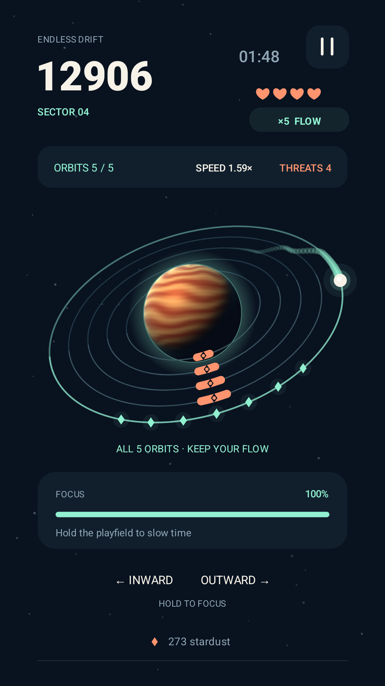

Offline space arcade · Android
Find your
rhythm in orbit.
Tap to switch orbits. Dodge the next hazard. Keep the stardust combo alive. Aster Loop is a one-handed arcade game for a quick break and one more run.
Core gameplay works offline · No account required
English & Traditional Chinese · Contains ads

Build your next run
In Endless mode, reach a new sector and choose an upgrade. The pace rises as the arena grows from two orbits to five.
A 90-second challenge
Daily mode uses a pattern based on the UTC date. Replay today’s challenge to improve your score, then return for a different pattern.
Make it your own
Collect stardust, complete local missions and unlock cosmetic styles. Your scores, unlocks and progress stay on your device.
Simple controls. Room to improve.
How to play Aster Loop
Tap to change orbit
Tap on the left to move inward or on the right to move outward. Watch the next gap as hazards approach.
Hold to focus
Hold the play area to spend focus energy and slow the action when a dodge gets tight.
Collect and keep moving
Pick up stardust, keep your combo going and try to beat your local best. Pause when you need a break.
Before your first orbit
Can I play Aster Loop offline?
Yes. Core gameplay works offline. Advertising and privacy-message services use the internet; ads may not always be available.
Are there online leaderboards or cloud saves?
No. Scores, daily results, cosmetics and progress are stored locally. Clearing app storage or uninstalling removes that progress.
Does the game have ads or in-app purchases?
The game contains ads. Optional rewarded offers state their in-game benefit before you choose to watch. Interstitial ads may appear between completed runs. There are no in-app purchases in this version. See the privacy policy for advertising and age-setting details.
Which languages are supported?
The game interface supports English and Traditional Chinese. This website also has a 繁體中文版本.
A question about your game?
Email free4564567@gmail.com for support or feedback. For a bug report, include your phone model, Android version, game version and steps to reproduce the issue.
Published by Corzfree. Read our privacy policy and local data deletion information.